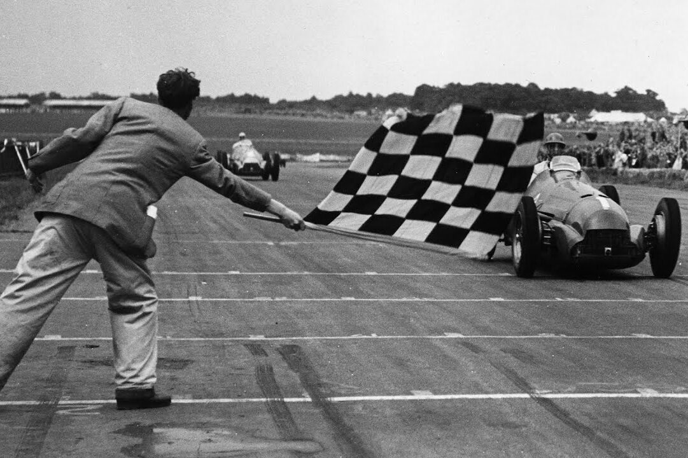
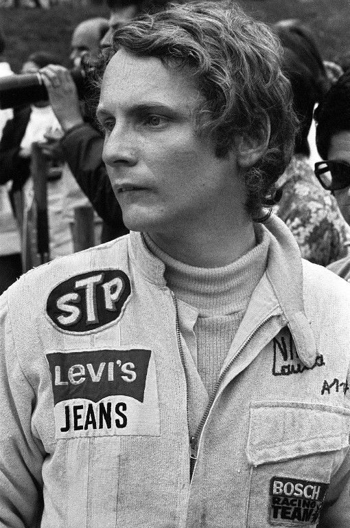
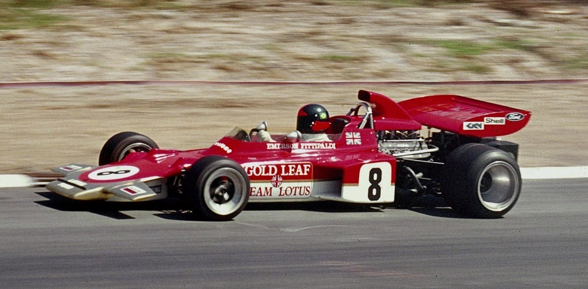
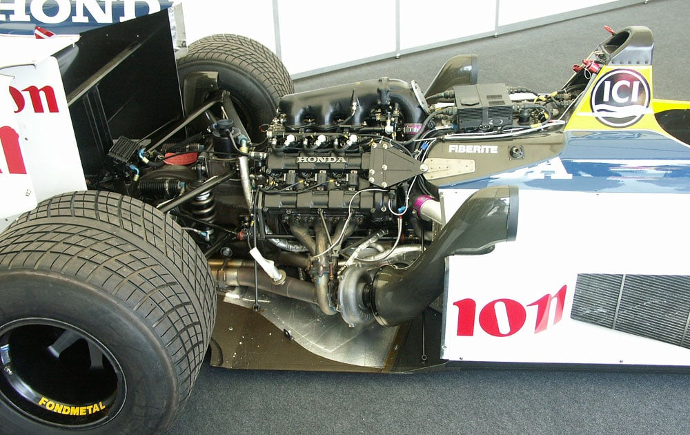
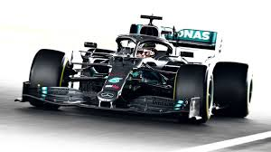
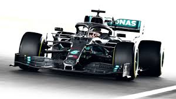

🏁 A Forma-1 Története
Kezdetek: 1950-es évek
A Forma-1-es világbajnokság hivatalosan 1950-ben indult, amikor megrendezték az első Forma-1-es világbajnoki futamot, a brit nagydíjat Silverstone-ban. A versenysorozat kezdetben a legjobb pilóták és csapatok számára biztosított lehetőséget, hogy megmérkőzzenek egymással, miközben az autók és a technológia is folyamatos fejlődésen ment keresztül. Az első világbajnok, Giuseppe Farina, 1950-ben szerezte meg a címet, és az autók ekkor még a második világháború utáni kor szigorú technikai szabályozásai szerint épültek.
A nagy nevek és a versenyek aranykora: 1960-1980
A 1960-as és 1970-es években a Forma-1 a motorsport világának csúcsává vált. A sportág legendás versenyzői, mint Jim Clark, Jackie Stewart, Niki Lauda, és Emerson Fittipaldi, mind hozzájárultak a széria népszerűségéhez. Ekkor kezdtek el a csapatok egyre inkább a mérnöki technológia fejlődésére és az autók aerodinamikai fejlesztésére összpontosítani.
Az 1970-es évek végére, különösen Lauda és James Hunt rivalizálása után, a Forma-1 komoly médiavisszhangot kapott, és egyre nagyobb nemzetközi figyelem irányult a versenyekre.
 Technológiai fejlődés és a 80-as évek
A 1980-as években a Forma-1 az egyik legdinamikusabban fejlődő sporttá vált. A csapatok az erősebb motorok és fejlettebb aerodinamikai megoldások mellett a gumik és a stratégiai tervezés szerepét is egyre inkább hangsúlyozták. A versenyzők között ekkor tűnt fel Ayrton Senna és Alain Prost, akik a sportág egyik legnagyobb rivalizálásait vívták.
A korszak egyik mérföldköve volt a turbófeltöltős motorok elterjedése, melyek hatalmas teljesítményfölényt biztosítottak egyes csapatoknak, de emellett a technikai problémák és a megbízhatóság is fontos tényezővé váltak.
Az 1990-es évek és Michael Schumacher korszaka
A 1990-es évek végén a Forma-1 történetének egyik legnagyobb neve, Michael Schumacher emelkedett ki. Schumacher mindössze három év alatt kétszeres világbajnok lett, és 2000-ben a Ferrari csapatával elérte az egyik legnagyobb sikerét, megszerezve a csapat számára 21 év után az első világbajnoki címet. Schumacher a versenyzés mestere lett, és a következő években több rekordot is felállított.
A versenyek technikai szabályozása is jelentős változásokon ment keresztül, és a sportágot egyre inkább a pénzügyi háttér és a csapatok szoros összefonódása jellemezte.

A modern Forma-1: 2000-es évek és napjaink
Az új évezredben a Forma-1 folytatta fejlődését, és az autók még kifinomultabb aerodinamikai megoldásokkal, valamint hibrid erőforrásokkal készültek. A szabályok is folyamatosan változtak, hogy biztosítsák a versenyek izgalmas jellegét és a biztonságot.
A 2000-es években, a 2010-es évektől kezdve, Lewis Hamilton dominálta a sportot, miután a Mercedes csapatához csatlakozott. Hamilton, aki a Forma-1 történetének egyik legnagyobb versenyzője lett, számos világbajnoki címet szerzett, és a modern Forma-1 meghatározó alakja lett.
 

Forma-1 jövője
A Forma-1 napjainkban folytatja fejlődését, egyre nagyobb figyelmet fordítva a fenntarthatóságra és az elektromos technológiák integrálására. A sportág hatalmas globális közönséget vonz, és a csapatok, mint a Ferrari, Red Bull Racing, Mercedes és McLaren, mindig is az élvonalban voltak a versenyek és a fejlesztések terén.
A Forma-1 története tele van szenvedéllyel, drámai pillanatokkal és technológiai áttörésekkel, amelyek minden évben újabb és újabb mérföldköveket hoznak a motorsport világában.